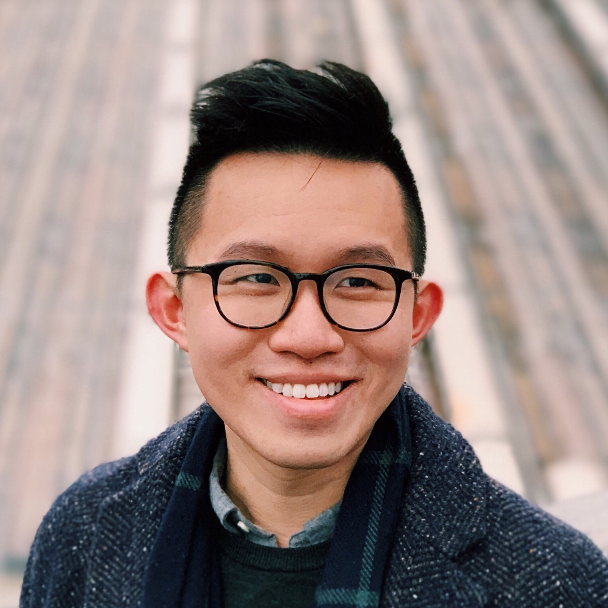

Samuel Chan is a musicologist, thinking partner, and baritone in New York interested in voice studies, Sinophone studies, and media anthropology. He has presented his work on musical hatred, vocal failure, and sonic racialization at chapter meetings of the American Musicological Society and the Society for Ethnomusicology, and at conferences in Finland, Hong Kong, and around the US. He co-organized Un/Sounding the Relational City and Sonic Fluidities, sound studies conferences featuring keynotes by Steven Feld, George Lewis, Clara Latham, and Roshanak Kheshti.
Samuel is a PhD student and Henry MacCracken Fellow in Music at New York University. He holds an MA in Integrative Studies from UC San Diego and a BA with First Class Honors from the Chinese University of Hong Kong, where he was awarded the Bernard van Zuiden Music Prize for graduating top of class. Other major awards include the Hong Kong SAR Government Scholarship, the Hong Kong Jockey Club Music Scholarship, and the Kunkle and Pommerenke Grand Scholarship. He currently serves as Associate Editor at SEM Student News and an admin at Decolonizing Ethnomusicology.
Email: samuelchan@nyu.edu